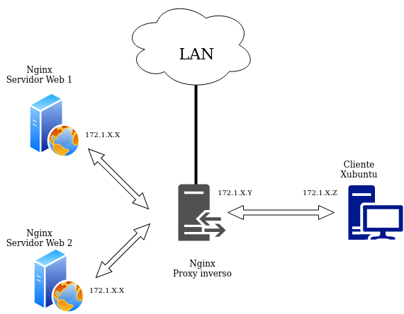

Practica 5.1 - Instal·lació i hardening (bastionat) de servici SSH
Requisits abans de començar la pràctica
Atenció, molt important abans de començar!
- Treballarem sobre l'escenari que ens va quedar al final del tema 4, que si recordeu era un proxy invers i dos servidors web
- Configurarem el servidor SSH en el proxy invers
Nota - Descripció de les màquines
Heu de posar al principi de l'informe de la pràctica aquest apartat, indicant què màquines heu utilitzat en la pràctica i amb quines IPs:
| Màquina | IP |
|---|---|
| Client SSH | 172.1.X.X |
| Servidor SSH | 172.1.X.X |
| ... | ... |
Introducció
Aprendrem a instal·lar i a configurar un servici SSH per poder connectar-nos de forma remota.
El primer serà configurar una interfície addicional en aquest proxy invers. Serà un adaptador de xarxa tipus pont o bridge. Això ens proporcionarà el següent escenari:

Quan tot estiga ben configurat, podrem connectar-nos via SSH tant des del client Xubuntu com des de la vostra màquina host o física. Això us proporcionarà l'avantatge de poder iniciar el proxy invers amb VirtualBox en format sense pantalla, connectar-vos via SSH i fer les pràctiques directament des del terminal de Lliurex. Això té avantatges com que deixarà copiar i pegar sense problemes.
Instal·lació i configuració de OpenSSH
Instal·lació
Per instal·lar el nostre servidor SSH no tenim més que:
sudo apt install openssh-server
Per comprovar l'estat del servici:
systemctl status ssh
Linux ja ve amb un client SSH preinstal·lat, per la qual cosa no seria necessària major configuració en el client. Ja hauríeu de poder connectar-vos de forma remota al proxy invers amb el següent comando:
ssh nom_usuari_proxy@IP_proxy
-
Proveu que podeu connectar-vos des del client Xubuntu usant òbviament la IP de la interfície de la xarxa interna del proxy
-
Proveu a connectar-vos per la interfície de la LAN del proxy utilitzant el vostre ordinador de classe o de casa (en estar en adaptador pont, estareu a la mateixa xarxa vosaltres i la màquina virtual)
- Per connectar-vos des d'un ordinador amb Windows haureu d'instal·lar-vos un client SSH com Putty: Client Windows
La primera vegada que us connecteu, us apareixerà alguna cosa com això:

Se'ns està informant que l'equip al que ens estem connectant per SSH podria no ser el nostre o el que pensem que és. Per estar 100% segurs, caldria anar al proxy-server, comprovar la seva “petjada” (fingerprint) que ho identifica i comparar-la amb la qual aquí se'ns mostra.
Atès que això és una pràctica acadèmica, que el nostre escenari és molt senzill i podem estar segurs que el proxy-server és la nostra màquina, simplement li direm “yes” i continuarem la connexió.
Aquesta acció afegirà al proxy-server a l'arxiu known_hosts.
Quins arxius de configuració tinc?
-
/etc/ssh/sshd_config: Arxiu principal de configuració del servidor SSH (configura el dimoni o servici). -
/etc/ssh/ssh_config: Arxiu principal de configuració dels clients SSH. -
/.ssh/config: Arxiu personal de cada usuari. Conté la configuració utilitzada pels clients SSH. Permet a l'usuari local utilitzar una configuració diferent a la definida en l'arxiu /etc/ssh/ssh_config. -
/.ssh/known_hosts: Arxiu personal de cada usuari. Conté les signatures digitals dels servidors SSH als quals es connecten els clients. Quan aquestes signatures canvien, es poden actualitzar executant el comando ssh-keygen -R, passant el nom de l'amfitrió o la IP de l'amfitrió com a argument. Aquest comando elimina l'entrada corresponent en l'arxiu /.ssh/known_hosts i, permet afegir de nou a l'amfitrió amb una nova signatura digital. -
/.ssh/authorized_keys: Arxiu personal per a cada usuari. Conté els certificats dels clients SSH, per permetre autenticació cap a servidors SSH sense requerir contrasenya.
Principals directrius de la configuració
Quan parlem de fer hardening d'un servici, ho podríem traduir com a fortificació o bastionat. És a dir, es configura un servici de tal manera que es protegeix el màxim possible de qualsevol fallada o atac a aquest servici.
Després de la instal·lació procedirem a la configuració del servidor, per a això, editarem el fitxer de configuració /etc/ssh/sshd_config.
Vegem detalladament les directrius que poden aparèixer en aquest arxiu:
Directriu Port
De forma predeterminada, el servici SSH escolta pel port 22. La directriu per defecte seria:
Port 22
Una forma d'elevar la seguretat del servidor SSH, consisteix a canviar el nombre de port predeterminat per un altre que només l'administrador del sistema conegui. A aquest tipus de tècniques se'ls coneix com a seguretat per foscor. Encara que no es considera ni recomanable ni suficient.
Els atacants buscaran servidors que estiguin escoltant pel port 22. Canviar de port disminueix considerablement la possibilitat d'una intrusió.
Directriu ListenAddress
De forma predeterminada, el servici SSH escoltarà peticions a través de totes les adrecis IP corresponents a totes les interfícies de xarxa del sistema. La directriu per defecte seria:
ListenAddress 0.0.0.0
Es pot configurar perquè només escolti per una de les interfícies.
Directriu Protocol
Permet indicar què versió del protocol utilitzar. Ja vam dir que la versió segura avui dia és la 2:
Protocol 2
Directriu LoginGraceTime
En aquesta directriu s'estableix el temps, en segons, durant el qual la pantalla de login estarà disponible perquè l'usuari introdueixi el seu nom d'usuari i contrasenya, si no ho fa durant aquest període de temps el login es tancarà, evitant així deixar per temps indeterminat pantalles de login sense que ningú les usi, o que algú est intentant mitjançant un script endevinar un usuari i la seva contrasenya.
Si el valor és 0, no hi ha límit de temps perquè un usuari s'autentiqui, la qual cosa no és recomanable ja que d'aquesta forma un atacant podria utilitzar atacs de força bruta o usant mètodes de diccionari per endevinar la contrasenya, per tant no és recomanable deixar aquesta directriu a 0.
Directriu PermitRootLogin
Probablement sigui la directriu de seguretat més important que podem establir per assegurar el nostre servidor SSH. En els sistemes Unix i Linux es crea per defecte a l'usuari root, amb privilegis de adnimistrador.
Molts atacs de força bruta es concentren a atacar a l'usuari root amb l'esperança que tingui una contrasenya feble. Sabent una part de l'equació (root) solament serà qüestió de temps perquè algú amb paciència i sort vulneri el sistema. En aquesta directriu deneguem l'accés a l'usuari root i per tant, qualsevol intent d'atac directe a l'usuari root serà inútil.
En denegar l'accés a l'usuari root, cada vegada que necessitem realitzar tasques administratives, accedirem com un usuari normal i una vegada dins, utilitzant algun dels comandos el seu o sudopodrem realitzar aquestes tasques administratives. Per tant, denegant l'accés a l'usuari root, l'atacant haurà d'encertar tant el nom d'un usuari del sistema com la seva contrasenya, alguna cosa que disminueix notablement la probabilitat d'una intrusió.
PermitRootLogin yes/no
Directriu StrictModes
En aquesta directriu s'estableix que sshd (el servici ssh) revisés els modes i permisos dels arxius dels usuaris i el directori $HOME de l'usuari abans d'acceptar la sessió.
Això és normalment desitjable perquè de vegades alguns usuaris deixen els seus directoris, accidentalment, amb permís d'escriptura per a qualsevol. El valor predeterminat és yes, per tant, ho deixarem amb el seu valor predeterminat.
StrictModes yes/no
Directriu MaxAuthTries
El valor d'aquesta directriu estableix el màxim nombre d'intents d'autenticació permesos per connexió, és a dir, la quantitat de vegades que podem equivocar-nos en ingressar l'usuari i/o contrasenya. Una vegada que els intents aconsegueixen la meitat d'aquest valor, les connexions fallides següents seran registrades.
Després del màxim nombre d'intents es tancarà la connexió. És possible tornar a intentar-ho, però el límit d'intents per vegada evita atacs basats en la persistència de la connexió.
MaxAuthTries 5
Directriu MaxStartups
El valor d'aquesta directriu estableix el màxim nombre de connexions simultaneges de login que permetrà el servidor SSH per cada IP que intenti connectar-se.
Hi ha atacs molt efectius que divideixen l'atac en una gran quantitat de connexions de login. És a dir, l'atacant divideix en una gran quantitat de logins els intents per ingressar, augmentant les seves possibilitats d'endevinar abans a l'usuari i la seva contrasenya.
MaxStartups 5
Directriu MaxAuthTries
El valor d'aquesta directriu estableix el màxim nombre d'intents d'autenticació permesos per connexió, és a dir, la quantitat de vegades que podem equivocar-nos en ingressar l'usuari i/o contrasenya. Una vegada que els intents aconsegueixen la meitat d'aquest valor, les connexions fallides següents seran registrades.
Després del màxim nombre d'intents es tancarà la connexió. És possible tornar a intentar-ho, però el límit d'intents per vegada evita atacs basats en la persistència de la connexió.
MaxAuthTries 5
Directriu MaxStartups
El valor d'aquesta directriu estableix el màxim nombre de connexions simultaneges de login que permetrà el servidor SSH per cada IP que intenti connectar-se.
Hi ha atacs molt efectius que divideixen l'atac en una gran quantitat de connexions de login. És a dir, l'atacant divideix en una gran quantitat de logins els intents per ingressar, augmentant les seves possibilitats d'endevinar abans a l'usuari i la seva contrasenya.
MaxStartups 5
Directrius per autenticar amb password
La directriu PasswordAuthentication habilita o deshabilita l'autenticació amb contrasenyes. Per defecte està permesa l'autenticació amb contrasenya.
Si establim el valor no només es permetrà l'accés a través de signatures digitals. És molt important no canviar el valor d'aquesta directriu a no fins a haver instal·lat la nostra signatura digital.
PasswordAuthentication yes/no
La directriu PermitEmptyPasswords especifica si es permet l'ús de contrasenyes buides, és a dir, autenticar-se sense contrasenya (no recomanable per motius de seguretat). Aquesta directriu és vàlida quan s'usa conjuntament amb PasswordAuthenticacion yes.
PermitEmptyPasswords yes/no
Directrius per permetre l'ús de X11
La directriu X11Forwarding estableix si es permetrà l'execució remota d'aplicacions gràfiques que utilitzin el servidor X11. És necessari que el valor estigui establert a yes per poder executar aplicacions gràfiques.
X11Forwarding yes/no
X11DisplayOffset 10
X11UseLocalhost yes/no
Directriu AllowUsers
Amb aquesta directriu establim que usuaris del sistema poden ingressar via SSH. Solament els usuaris llistats en aquesta directriu podran accedir.
AllowUsers raul professor administrador otroprofesor
Els usuaris raul, professor, administrador i otroprofesor podran accedir des de qualsevol ordinador, no es valida el host des del qual es connecten. Si es vol més seguretat, és possible indicar també el host o hosts (des dels quals l'usuari es pot connectar) mitjançant el símbol @. Vegem els següents exemples:
AllowUsers raul@192.168.10.2 (Solament des de la IP indicada)
AllowUsers raul@172.1.1. (Tota la xarxa indicada)
AllowUsers raul@.raul.es (Tot el domini indicat)
AllowUsers raul@cliXubuntu.raul.es (Solament l'equip del domini indicat)
AllowUsers raul@192.168.10.2 professor@172.1.1. administrador@.raul.es otroprofesor
Directriu UseDNS
Quan un client SSH realitza una connexió cap a un servidor SSH, el servidor intentarà resoldre l'adreça IP del client. Si el servidor DNS predeterminat del sistema manca d'una zona de resolució inversa que resolgui un nom per a l'adreça IP del client, la connexió es demorarà alguns segons més del normal.
Podem deshabilitar aquesta directriu per agilitar les connexions SSH en xarxes on es manca de servidors DNS que tinguin zones de reexpedició per resoldre els noms o zones de resolució inversa per resoldre les adrecis IP dels segments de xarxa local.
Ja que nosaltres tenim el nostre DNS on totes els registres de la zona de resolució directa han de tenir la seva equivalència a la zona de resolució inversa, ho podem deixar activat.
UseDNS yes/no
Directriu HostKey
Estudiem les següents línies:
# HostKey for protocol version 1
# HostKey /etc/ssh/ssh_host_key
# HostKeys for protocol version 2
# HostKey /etc/ssh/ssh_host_rsa_key
# HostKey /etc/ssh/ssh_host_dsa_key
# HostKey /etc/ssh/ssh_host_ecdsa_key
La directriu HostKey ens indica la ubicació de les claus públiques per al servidor sshd, tant per al protocol SSHv1 i SSHv2 de SSH. Com en el nostre exemple solament usarem el protocol SSHv2, eliminarem (o comentarem) les línies corresponents al protocol SSHv1.
Si volguéssim usar l'algorismes RSA per a les nostres claus, hauríem de deixar alguna cosa així:
# HostKeys for protocol version 2
HostKey /etc/ssh/ssh_host_rsa_key
Directriu PrintMotd
Aquesta directriu estableix si es presentarà o no el missatge del dia (MOTD).
El motd de Linux és un arxiu que conté un missatge del dia que es mostra a tots els usuaris que es connecten a la màquina per terminal. Normalment s'usa per informar als usuaris sobre l'estat del servidor o simplement per donar la benvinguda a la màquina. La ruta a l'arxiu és /etc/mtod.
Es tracta d'un arxiu de text pla el qual podem personalitzar. Cal tenir en compte que si el motd ja està habilitat per als usuaris del sistema, si ho habilitem en /etc/ssh/sshd_config, en iniciar sessió en el servidor SSH, este apareixerà duplicat.
El motd es mostra després d'autenticar-nos en el servidor.
PrintMotd yes/no
Directriu banner
Per mitjà d'aquesta directriu podem presentar un banner d'accés que ens permetrà mostrar un missatge abans de l'autenticació. Ensenyar un cartell d'advertiment exposant temes legals d'un accés no autoritzat.
El banner d'accés no és més que el contingut d'un fitxer de text pla situat en algun lloc del sistema i que podrem personalitzar al nostre gust. El banner d'accés es presenta abans d'autenticar-nos en el servidor.
banner /etc/ssh/ssh_pre-login
Directrius de registre d'esdeveniments (logs)
El registre d'esdeveniments del servici és important així com la ruta on guardar-los, un atacant experimentat intentarà netejar els logs per evitar ser atrapat. En aquestes directrius s'especifiquen els paràmetres per al registre d'esdeveniments:
-
SyslogFacility especifica el tipus de registres que generarà, en aquest cas és AUTH, és a dir, de les autenticacions que es fan contra el servidor. El paràmetre AUTH és el predeterminat.
-
LogLevel amb el valor INFO és el valor predeterminat. Altres paràmetres estan especificats a la pàgina del manual de sshd_config (mansshd_config), els paràmetres DEBUG2 i DEBUG3 cadascun d'ells especifiquen el nivell més alt de registre. Guardar registres amb el nivell DEBUG viola la privadesa dels usuaris i per tant no és recomanable.
En el nostre exemple el registre d'esdeveniments quedaria configurat de la següent manera:
SyslogFacility AUTH
LogLevel INFO
Directriu RSAAuthentication
Amb aquesta directriu deshabilitem l'autenticació amb RSA.
RSAAuthentication yes/no
Directriu PubkeyAuthentication
Aquesta directriu especifica l'ús d'autenticació per mitjà de la clau pública.
PubkeyAuthentication yes/no
Directriu AuthorizedKeysFile
Aquesta directriu s'usa en conjunt quan s'usa autenticació per clau pública, i especifica on es guarden les claus en el host remot.
El valor per defecte és /.ssh/authorized_keys aquesta ruta és per defecte per al protocol SSHv2 de SSH.
AuthorizedKeysFile %h/.ssh/authorized_keys
Directriu IgnoreUserKnownHosts
Aquesta directriu especifica si s'ignorés o no l'ús de l'arxiu /.ssh/known_hosts en el qual s'agreguen les claus dels servidors SSH als quals ens connectem i confiem. Per tant deu estar en no per no ignorar aquest arxiu.
IgnoreUserKnownHosts yes/no
Directriu AllowTcpForwarding
Especifica si es permet fer redireccionamiento de protocols basats en TCP. Permet crear túnels a connexions de protocols no segurs, enviant la informació en text pla per un túnel xifrat.
Molt usada en connexions POP3 o IMAP, es recomana deixar-ho per defecte.
AllowTcpForwarding yes/no
Directriu PrintLastLog
Aquí s'especifica si es mostrarà un missatge mostrant l'adreça IP d'on es va conectar l'usuari la ultima vegada. Molt útil per saber si algú més s'està connectant amb un usuari en concret.
PrintLastLog yes/no
Directriu TCPKeepAlive
Ens indica que el servidor sshd enviarà missatges de keepalive al client després que detecta alguna inactivitat. Aquest mètode pot ser explotat per tècniques de spoofing.
TCPKeepAlive yes/no
Directriu UsePrivilegeSeparation
Significa que després que la sessió SSH s'ha establert es passessin els privilegis d'aquest procés a l'usuari de qui iniciï la connexió, si es deshabilita, el procés estarà a nom de root. Molt important per evitar escalada de privilegis.
UsePrivilegeSeparation yes/no
Directriu ClientAliveInterval
Aquesta directriu especifica l'interval de temps en segons en el qual després que no s'ha rebut cap dada del client, sshd enviés un missatge a través del canal xifrat per requerir una resposta del client, el valor predeterminat és 0, el qual significa que no s'envia tal missatge. Aquesta opció només s'aplica al protocol SSHv2.
És útil quan es té una connexió intermitent i es requereix que la sessió estigui oberta sense que es tanqui la sessió.
ClientAliveInterval 0
Directriu ClientAliveCountMax
Ens indica les vegades que el servidor sshd enviarà missatges keepalive quan el client està inactiu. Si el client no envia cap resposta, llavors el servidor acabés la connexió i per tant la sessió.
Si tenim connexions intermitents és recomanable pujar el numero a aquest valor. Cal tenir en compte que aquesta opció és diferent a l'opció TCPKeepAlive, aquests missatges són enviats a través del canal xifrat, per tant no pot ser explotat per tècniques de spoofing com el TCPKeepAlive.
ClientAliveCountMax 3
Directriu PidFile
Aquesta opcion estableix el nom i ruta de l'arxiu on es guarda l'identificador de procés (pid) de sshd.
PidFile /var/run/sshd.pid
Directriu Subsystem
Aquesta opció el que fa és iniciar el servidor sftp-server el qual és un substitut per a un servidor FTP, però la comunicació és segura, ja que es fa per un canal xifrat.
Subsystem sftp /usr/libexec/sftp-server
Directriu PermitBlacklistedKeys
Si aquesta directriu s'estableix a yes permetrà fer login amb claus en llista negra.
PermitBlacklistedKeys yes/no
Directriu IgnoreRhosts i RhostsRSAAuthentication
Amb aquestes directrius deneguem l'ús de relacions de confiança establertes en els fitxers /.rhosts i /.shosts dels usuaris:
IgnoreRhosts yes/no
RhostsRSAAuthentication yes/no
Directriu HostbasedAuthentication
Deshabilitar o habilitar autenticació basada en host.
HostbasedAuthentication yes/no
Directriu UsePAM
Si utilitzem claus no necessitem PAM (Mòduls d'autenticació Conectables) i permetem a sshd funcionar com un usuari no root.
Bastionat/hardening/fortificació del servici SSH
Avís
Totes les comprovacions les heu de fer tant des de l'ordinador amfitrió, usant la IP de la LAN del servidor, com des del client Xubuntu, usant el nom del DNS.
Qüestions finals
Avaluació
| Criteri | Puntuació |
|---|---|
| punts | |
| punts | |
| punts | |
| punts | |
| S'ha tingut cura amb el format del document, utilitzant la plantilla actualitzada i fent ús d'un correcte llenguatge tècnic | punt |
| S'ha inclòs la taula amb les IPs de cada màquina de la pràctica, tal i com es demana | punt |